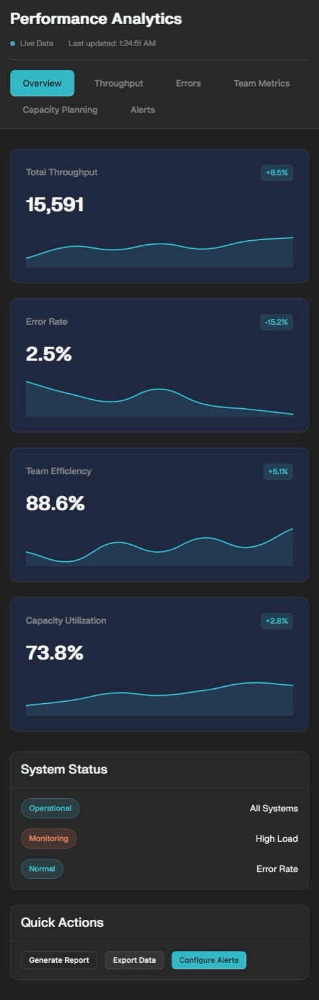

Performance Analytics Tool2025DemoDataDashboardInteractive demo dashboard simulating enterprise KPIs across throughput, errors, team metrics, and capacity planning.View on GitHub
VCF Variant Filtering Demo2025DemoGenomicsVCFA lightweight demo exploring variant filtering flow for VCF data.View on GitHub
DuLoup Holdings Website2025WebBrandSitePrimary corporate site for DuLoup. Branding, content, and deployment.Visit Site
Technical Writing Samples Collection2025DocsGuidesReportsCollection of five samples: User Manual, Process Workflow, System Architecture, Training Tutorial, and Executive Report.View PDF